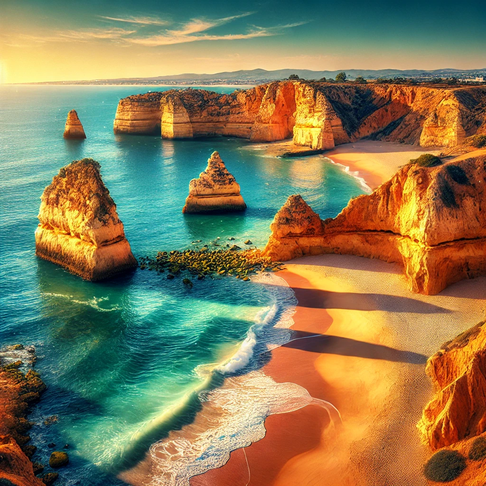

Inicio
Lugares Icónicos
Sabores de Portugal
Rincones con Historia
Enlaces
Lugares Icónicos
Cambiar Tema
Explora los lugares más emblemáticos de Portugal
Lisboa:
Torre de Belém, Alfama y el Monasterio de los Jerónimos.
Oporto:
Ribeira, bodegas de vino y el Puente Don Luis I.
Algarve:
Playas como Praia da Marinha y acantilados impresionantes.
